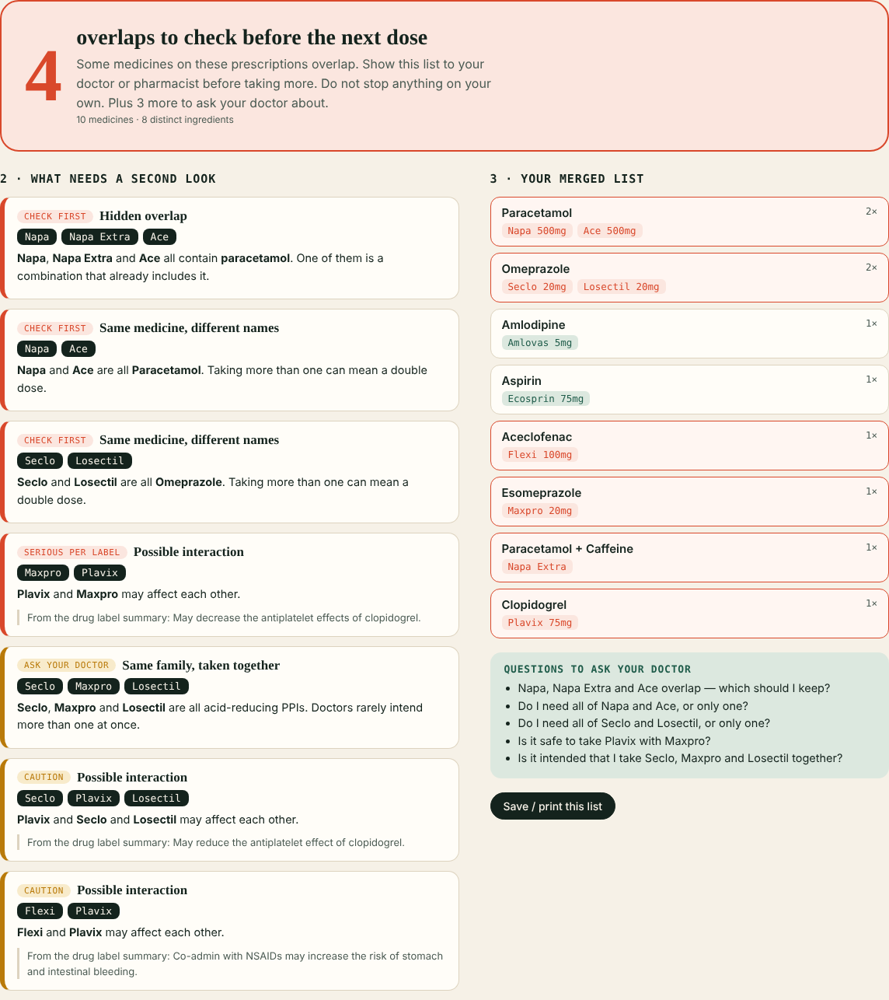

DSH Hacks V2 · AI × Healthcare · Demo: shahriarsharif406.github.io/medmerge · Code: github.com/shahriarsharif406/medmerge
In Bangladesh one medicine is sold under dozens of brand names — Napa and Ace are both paracetamol, Seclo and Losectil both omeprazole. Patients who see several doctors collect several prescriptions, and a double dose can hide behind two different names. Nobody reads them side by side.
Existing tools check interactions in US/EU hospital records. MedMerge targets the Bangladeshi brand maze, works from a patient's phone, and runs entirely in the browser — no server, no stored data.

Pure JavaScript engine (parser → brand/generic resolver with fuzzy matching → ingredient, class and label-text comparison), unit-tested in Node. Data: wsayan/medicinedb (MIT). Optional Gemini 2.5 Flash vision for photos using the user's own key. GitHub Pages hosting.
Built by Shahariar · Anvia Labs · MIT licence